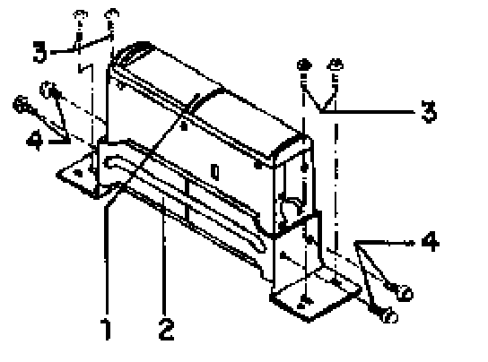
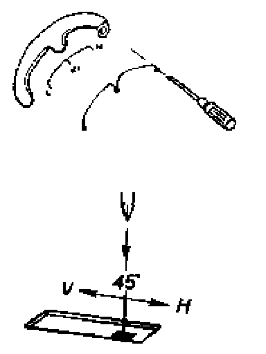
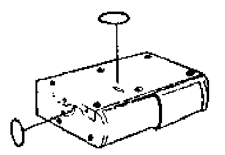
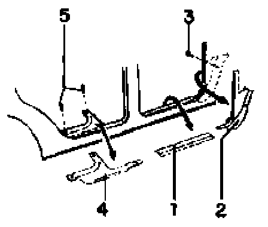
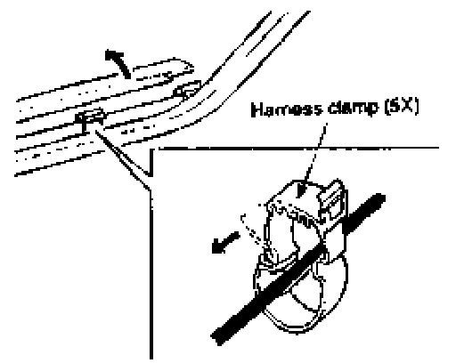
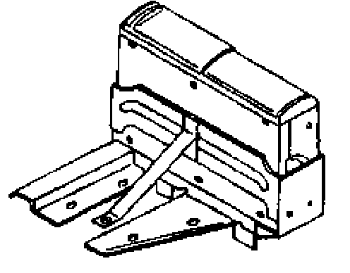
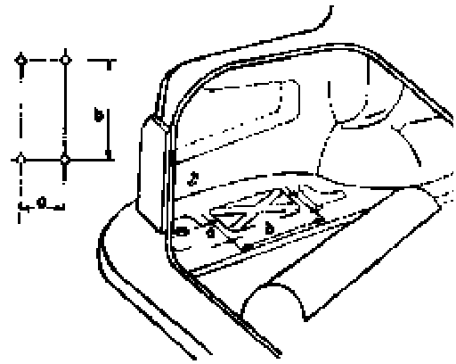
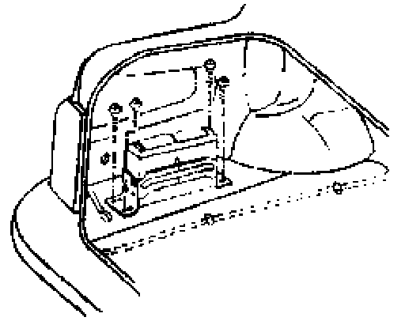
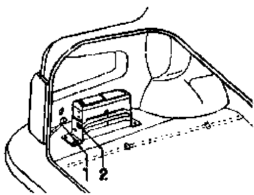

Compact Disc Player (CD): Service and Repair
Compact Disc (CD) changer, installing (vehicles with "Premium" radios)The following describes the factory approved service installation of Volkswagen CD changers, Part No.1HO 035 111 into Golf and Jetta vehicles equipped with Volkswagen Premium Radios, Part No.1HM 035 186 C or D.
Notes:
- Use the following factory developed CD changer kits containing model specific mounting brackets, hardware and CD changer cable. Kit Part Numbers:
- Golf: Part No. 1 HM 098 111 E
- Jetta: Part No.1 HM 098 111 F
- Always confirm CD changer and radio brand pairing, Eg.: Clarion radio requires use of Clarion CD changer Clarion radios are identified by a square "stop-eject" button.
- This information supersedes any installation instructions that may be included with the CD changer or kit.
- Carefully review all of the following instructions before proceeding with installation.
- Never install CD changer in a location, position, or manner other than specified by these instructions.
CAUTION! Part numbers are for reference only. Always check with your Parts Department for latest parts information.
Golf/Cabrio, installed position

Rear side rail of luggage compartment floor, ahead of right tail light assembly.
1. - CD changer
2. - CD changer bracket
3. - Main bracket
4. - Self taping screw
5. - Hex screw
6. - Nut
Jetta, installed position

Rear side rail of luggage compartment floor, ahead of left tail light assembly.
1. - CD changer
2. - CD changer bracket
3. - Self taping screw
4. - Hex screw
Golf/jetta, installation
- Check the settings of both CD changer angle of installation selection switches. For Golf/Jetta application, switches must be set to the vertical ("V") position. Switches are located on side bottom of CD changer.
Note: CD playback will skip if switches are not set correctly.
Setting:
Side

- Insert tip of small screwdriver into round hole and slide switch completely to the vertical ("V") position.
Bottom
- Insert tip of small screwdriver into square hole and slide switch completely to the vertical ("V") position.
Notes:
- Angle of installation selection switches may be preset at the manufacturer for horizontal ("H") installation.
- Always check/set switches prior to CD char installation.
- Switches must move completely to their end positions.

- Cover selector switch openings with supplied self adhesive seals.
CAUTION! Before proceeding with installation:
- Obtain radio security code.
- Note customers pre-set radio stations.
- Ignition OFF!
- Disconnect Battery Ground (GND) strap.

- Remove radio -3- using tool VW16O -2-.
- Remove passenger side knee bar (or tray if equipped) -1-.

- Connect black 10 Pin (DIN) CD changer cable connector -1- to free 10 pin terminal on rear of radio.
- Feed remaining CD changer cable into area of removed passenger side knee bar (or tray) for routing.
- Secure cable to existing wiring harness (if present) using supplied cable ties -3-, or use adhesive tape to route along metal framework.
Note: Ensure cable is secured in a manner to prevent rattles and squeaks.
- Feed remaining cable into passenger's footwell kick panel area for routing along passenger sill panel.
- Reinstall radio and passenger side knee bar (or tray), making sure that CD changer cable is not pinched.

- Remove passenger side footwell trim -2- and sill panel trim -1-.
- Lift rear seat bottom cushion and remove rear sill panel trim -4-.
- Loosely feed cable along passenger side sill panel, under rear seat, and into luggage compartment area.

- Secure cable to sill panel at all of the vehicle main harness clamp locations as illustrated.
- Lift or remove center luggage compartment floor carpet.
Golf/Cabrio, installation continued
- Lift right rear luggage compartment side par carpet below "C" pillar as necessary.
- Loosely route cable into area behind carpet. (Installed CD changer C-Bus terminal will face the wheel well).
- Mark and center punch mounting holes as illustrated.

a = 107.5 mm
b = 82.5 mm
c = 77.5 mm
d = 11 mm
e = 55 mm
- Drill 4mm holes at marked locations.
- Fasten CD changer bracket to main bracket using supplied nuts.

- Mount CD changer to changer bracket assembly using supplied hex screws.
- Fasten CD changer assembly to vehicle floor at drilled locations using self taping screws.
- Refit side panel carpet below "C" pillar.
- Trim carpet as necessary to clear installed CD changer assembly.
Jetta, installation continued
- Route cable underneath center luggage compartment floor carpet into left rear tail light area. (Installed CD changer C-Bus terminal face the tail light assembly). It is not necessary to lift the left rear side panel carpet.
- Use CD changer bracket as drilling template. Place on top of left rear side panel carpet at so that mounting flange holes correspond to raised portions of luggage compartment floor (see illustration).
Note: When using the bracket as a drilling template, the square opening in one side of the changer bracket MUST face the tail light assembly. This is where the C-Bus connection of the CD change cable will pass through.

- Hold bracket firmly in place and drill four, 4mm holes at the bracket mounting flange, through carpet, into luggage compartment floor rail.
Corresponding dimensions:
a = 40 mm
b = 307 mm
7

- With bracket still held in place, mark carpet -arrows-.
- Using utility knife or equivalent, slit carpet where marked.
- Mount CD changer to changer bracket using supplied hex screws.
Note: Bracket mounting flanges will pass through side panel carpet at locations -a- and -b- when fastened to floor (see illustration).

- Partially lift side panel carpet. Fasten CD changer assembly to vehicle floor rail at drilled locations using self taping screws.
- Refit carpet so that slit portion of carpet clears the bracket mounting flanges.
- Fold remaining carpet underneath the mounted CD changer assembly.
- Optional method is to fasten empty CD changer bracket to vehicle floor first (without CD changer installed), then refit/fold carpet and mount CD changer to bracket.
Installation, continued
Golf

- Insert 13 pin connector -1- from cable to C-Bus terminal on CD changer -2-.
- Route and secure excess cable as necessary.
Jetta

- Insert 13 pin connector -1- from cable to C-Bus terminal on CD changer -2-.
- Route and secure excess cable as necessary.
- Reinstall and secure all previously removed sill panel trim, seat cushions and luggage compartment carpet.
- Vacuum luggage compartment (including underneath all carpet areas if necessary).
- Reconnect Battery Ground (GND) strap.
- Input radio security code and reset customer's preset stations.
- Refer to CD changer owner's guide and check proper operation of CD changer.
- Ensure CD changer owner's guide is forwarded to customer.
Note: After reconnecting battery:
- Activate vehicle vehicle equipment such as clock and power windows.
- On vehicles equipped with OBD II, activate readiness code.